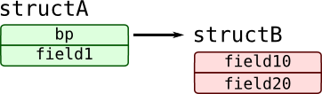
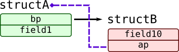
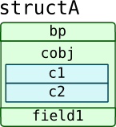
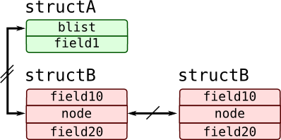
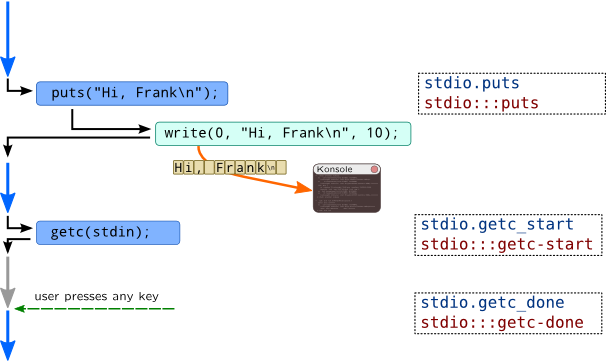

Typographic conventions
This is a book published on the web and so it doesn't have any "typography", but certain parts of text are decorated with certain styles, thus we describe them in this section of the book.
| Meaning | Example |
| First appearance of new terms | Central processing unit (CPU) executes program code. |
| Multiple terms linked with each other | CPU consists of execution units, cache and memory controller. |
| Definition of a term |
Definition According to this book, A central processing unit (CPU) executes program code. |
| Additional information about OS or hardware internals |
Information Do not read me if you already know me the answer |
| Notes and some additional information |
Note I am note and I am providing external information about the implementation I will warn you about some implementation quirks |
| Information that some of the examples or code in the section is not suitable for production use |
DANGER!
Never try to do |
| Function name, or name of the probe, any other entity that exist in source code |
If you want to print a line on standard output in pure C, use puts() |
| Chunk of the code that has to be used or command to be executed |
int main() {
puts("Hello, world");
}
$ perl -se '
print "Hello, $who" . "\n"
' -- -who=world
|
| Placeholders in program examples are covered in italic |
puts(output-string) |
| Large portions of example outputs may have some output outlined with bold: |
$ gcc hello.c -o hello $ ./hello Hello, world |
| Large program listing (if you want to show it, press on "+" button) |
Script file hellouser.py
import os
print "Hello, " + os.getenv('LOGNAME', 'anonymous') + '!'
|
Structural diagrams
Many kernel-related topics will contain structural diagrams which will represent kernel data structures like this:

In this example two instances of mblk_t structure (which is typedef alias) are shown which are linked together through pair of mblk_t pointers b_next and b_prev. Not all fields are shown on this diagram, types are omitted, while order of fields may not match real one. Following conventions are used in this type of diagrams:
| Example code | Diagram and explanation |
|
struct structB {
int field10;
char field20;
};
struct structA {
struct structB* bp;
int field1;
};
|
 structure structA points to instance of structB |
|
struct structA;
struct structB {
int field10;
struct structA* ap;
};
struct structA {
struct structB* bp;
int field1;
};
|
 structure structB contains backward pointer to structure structA |
|
struct structA {
struct structB* bp;
int field1;
struct {
char c1;
char c2;
} cobj;
};
|
 structure structA has embedded structure (not neccessarily to be anonymous) |
|
struct structB {
int field10;
char field20;
};
struct structA {
struct structB* bp;
int field1;
};
|
 structure structA points to a dynamic array of structures structB |
|
struct structB {
int field10;
char field20;
struct list_head node;
};
struct structA {
struct list_head blist;
int field1;
};
|
 structure structA contains head of linked list of structB instances Various structure relations can be shown with this type of arrows:
|
Timeline diagrams
Timeline diagrams are used to show various processes that exist in traced system and chain of events or operations happening with them and at the same time contains names of probes:

This diagram should be read like this:
- Thick colored arrows represent flow of some processes –- usually they are threads or processes in a system. Gray arrows represent processes that are inactive for some reason (usually, blocked and thus cannot be executed on CPU). Arrows corresponding to the same process share same baseline.
-
Thin black arrows demonstrate transfer of control between several operations. In this example
puts()call triggerswritesystem call. Some of them may be omitted. -
Thin
colored
lines demonstrate subsequent chain of events unrelated to the process. In this example phrase
Hi, Frankarrives in Konsole window (graphic terminal). - Text in dashed rectangles contains name of SystemTap and DTrace probes corresponding to the operations or events happening with the process.
Virtual time axis beginning at the top and it is vertical.
DANGER!
Probes shown in this example are purely fictional.